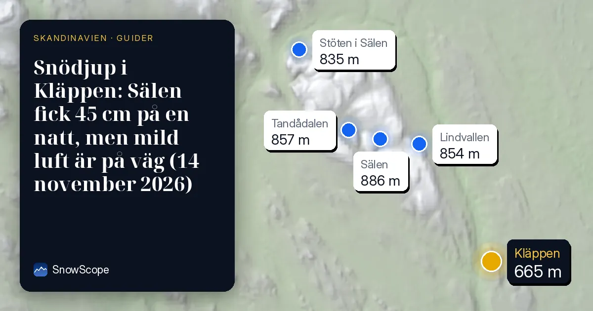

Snödjup i Kläppen: Sälen fick 45 cm på en natt, men mild luft är på väg (14 november 2026)
En enda natt förde vintern till västra Dalarna. Väderstation Sälen, 13 km norr om Kläppen på 364 m höjd, steg från 11 cm till 45 cm mellan morgnarna den 12 och 13 november. Detta plötsliga hopp berättar bara en del av historien: en varm period förväntas komma inom några dagar och mjukna mycket av det som precis föll.
Se snöprognosen för Kläppen live i SnowScope-appenSnödjup, pudervarningar och 3D-kartan, gratis.

Så fungerar snödjupet i denna region
Vädersstationer och skidorter mäter olika saker. En station står på en öppen plats och registrerar ny, packad snö på en exakt punkt. En skidort uppskattar vad skidåkare kommer att hitta på sina backar när snön är körd och packad. När Sälen visade 45 cm och Kläppen rapporterade 25 cm samma morgon var båda siffror korrekta: de mätte bara olika underlag och tidpunkter.
Närliggande Malungsfors på 321 m steg från 5 till 21 cm, och Gopshus nära Mora från 12 till 33 cm. Spridningen speglar det lokala terrängen och hur snön sätter sig på olika backar. Under de senaste sju dagarna uppskattar vi cirka 20 cm nysnö på Kläppen, det lägre värdet av det som föll.

Regn och värme kommer denna vecka
De nästa sju dagarna bringer nästan ingen nysnö på basen (355 m) och bara cirka 5 cm på toppen (665 m). Viktigare än så: prognosen visar att regn kommer att dominera på basnivå. Nollgradersgränsen förväntas stiga till cirka 560 m, vilket placerar den nära toppen av liften.
Det betyder att mycket av nysnön blir våt och tung, och sedan krymper. Snö på marken försvinner inte över en natt, men täcket på låga backar kommer att bli märkbart tunnare. Om du vill se Dalarna vitt är denna helg fönstret innan luften blir varmare.
Så står november i den långsiktiga statistiken
Under 46 tidigare vintrar håller Kläppen vanligtvis bara 6 cm den 14 november och 15 cm den 30 november. En vinter på fem ser bar mark på detta datum. Dagens 45 cm på Sälen är långt över medelvärdet för mitten av november, så denna händelse är verklig och ovanlig.
December är när basen vanligtvis byggger upp djupet. Den 15 december är medianen 24 cm. Men den långsiktiga trenden är nedåtgående: medianens högsta djup i de första 15 винtrarna var 81 cm, och i de senaste 15 vintrarna bara 58 cm.
När skidorten öppnar och vad du kan förvänta
Klöppens officiella säsong löper från 11 december 2026 till 4 april 2027. Ingen lift var i drift den 13 november. Skidorten kommer att meddela sitt öppningsdatum när det har tillräckligt med snö och infrastruktur redo på de backar det planerar att driva.
Från slutet av november och in i december kommer SnowScope-kartan att visa hur snön sätter sig över bas, mittslope och topp när vädersmönstret utvecklas. Läs den officiella lavinprognosen från Lavinprognoser innan du åker utanför spåren.
Timing spelar roll för de nästa tio dagarna
Den 21 november är mediandjupet i tidigare vintrar 9 cm på basen, med en på tio chans att det blir 36 cm om snön fortsätter. Den 30 november stiger det till 15 cm på basen. Den 15 december når det 24 cm, månaden när täcket vanligtvis stabiliseras.
Det som faller denna vecka spelar roll: om den varma perioden passerar snabbt och kyla återkommer stiger basen stadigt mot december. Om den varma luften stannar kvar kommer Kläppen att återställas till tunt täcke och vänta på nästa puls av kallluft från norr.
Tips för skidåkare
- Besök Dalarna denna helg om du vill se täcket av nysnö medan det fortfarande står. Prognos för regn nästa vecka kommer att mjuka upp det.
- Titta på nollgradersgränsen. På 560 m skär den över mittslopen. Övre backar förblir vita längre än lägre.
- Våt snö på träd kan bryta grenar och blockera skogvägar. Kör långsamt i området under de nästa dagarna.
- Läs Lavinprognosers lavinprognos före all backcountry-åkning. Nysnö på brant terräng bär alltid risk.
- Skillnaden mellan stationsmätningar och skidorts uppskattningar är normal. Vänta på Klöppens officiella öppningsmeddelande istället för att gissa utifrån väderstationy siffror.
Om siffrorna
Snödjupen för skidorterna är det djupaste snötäcket på ortens övre backar på det angivna datumet; de är uppskattningar för ett område, inte en mätning på en punkt. Prognoser kan ändras. Läs alltid den officiella lavinprognosen innan du åker offpist.
Officiella lavinprognoser: Lavinprognoser (Naturvårdsverket)
Citera den här rapporten
För forskning, undervisning eller press: siffrorna och diagrammen får återanvändas fritt under CC BY 4.0 med den här källhänvisningen.
SnowScope (2026), Snödjup i Kläppen: Sälen fick 45 cm på en natt, men mild luft är på väg (14 november 2026), https://snowscope.app/blog/sv/2026/11/klappen-snow-depth-14-november-2026.html, hämtad 2026-11-14
SnowScope (Atlas Labs). (2026, November 14). Snödjup i Kläppen: Sälen fick 45 cm på en natt, men mild luft är på väg (14 november 2026). SnowScope snow reports. https://snowscope.app/blog/sv/2026/11/klappen-snow-depth-14-november-2026.html
BibTeX
@misc{snowscope2026klappensnowdepth14novemb,
author = {{SnowScope (Atlas Labs)}},
title = {Snödjup i Kläppen: Sälen fick 45 cm på en natt, men mild luft är på väg (14 november 2026)},
year = {2026},
month = nov,
howpublished = {\url{https://snowscope.app/blog/sv/2026/11/klappen-snow-depth-14-november-2026.html}},
note = {Published 2026-11-14 13:59 UTC; accessed 2026-11-14}
}· CC BY 4.0 · Metoder, data och verktyg →
Kläppen: snö och temperatur efter höjd, i vinter jämfört med förra (verktyg) →
Följ Kläppen
Gratis: ett meddelande när nysnö är på väg, och prognosen varje morgon.